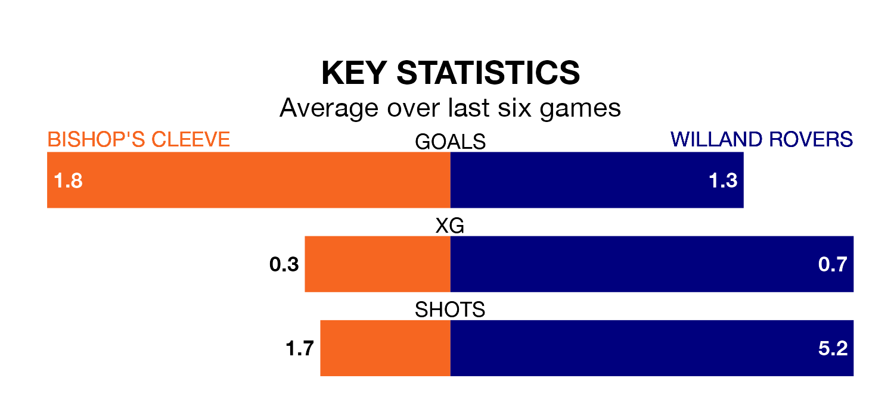

Willand Rovers travel to Bishop's Cleeve on Saturday in the Southern League Division One South.
The visitors come into the game on the back of a draw in their last match, having tied with Frome Town 0-0 at home.
Bishop's Cleeve, meanwhile, lost their last match, 1-0 against Melksham Town.
With 56 goals in 28 games so far this season, Bishop's Cleeve are the league's joint-second-highest scorers with 2.0 goals per game. But they are conceding more than average too, letting in 54 goals at a rate of 1.9 per game.
Willand, meanwhile, are average scorers, with 1.6 goals per game. They have also conceded 1.6 goals per game.
The hosts are in disappointing form in the Southern League Division One South, with one win and two draws from their last six games.
With a win and four draws over that period, Rovers' form is slightly better – they have taken seven points from 18, compared to Bishop's Cleeve's five.
The away team are sixth in the table after 28 games, of which they have won 11 and drawn seven, earning 40 points.
Bishop's Cleeve are seven places behind Willand in 13th, with nine wins and eight draws putting them on 35 points.
In the last three years, Bishop's Cleeve and Willand have played each other on three occasions. They won one each, and they drew once.
Their last meeting was on August 26, when Willand won 4-0 at home.
Updated: 15:10 (UTC), 15/03/24